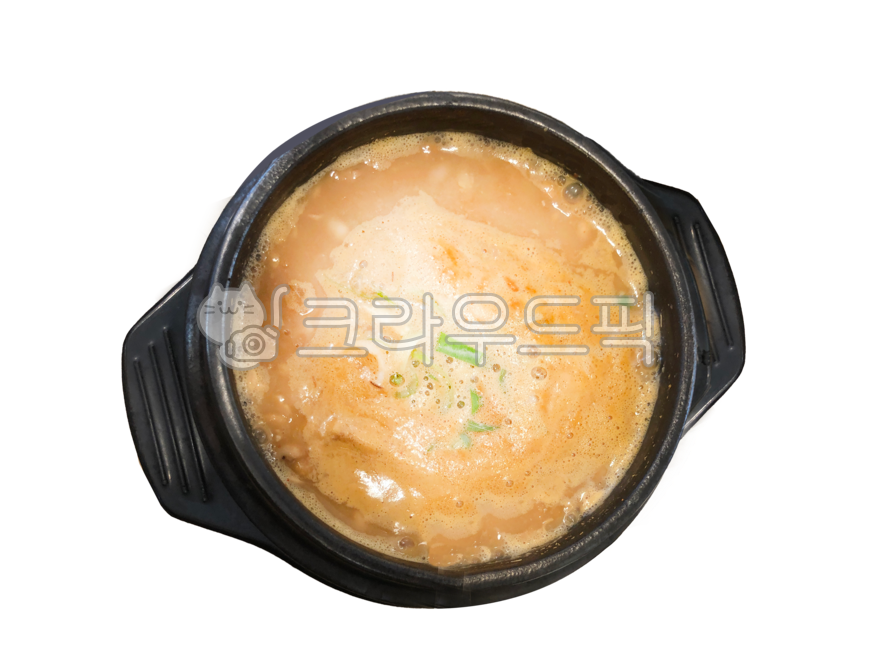

청국장
재료: 청국장(국내산), 감자(국내산), 애호박(국내산), 양파(국내산),
대파(국내산), 다시마(국내산)
청국장의 효능
청국장은 **프로바이오틱스(유익균)**가 풍부하여 장내 환경을 개선하고
소화와 배변 활동을 돕습니다. 청국장에 함유된 유산균과 비타민이
면역력을 증진시켜 감염 예방에 도움을 줍니다. 청국장의 레시틴 성분은
혈액 순환을 개선하고 콜레스테롤 수치를 낮추는 데 기여합니다. 청국장은
발효 과정에서 생성된 이소플라본과 항산화 물질 덕분에 암세포 성장을
억제하는 데 도움을 줄 수 있습니다. 청국장에 포함된 칼슘과 이소플라본은
뼈 건강을 유지하고 골밀도를 높이는 데 기여합니다. 청국장은 저지방,
고단백 식품으로, 포만감을 유지시켜 체중 관리에 도움을 줍니다.